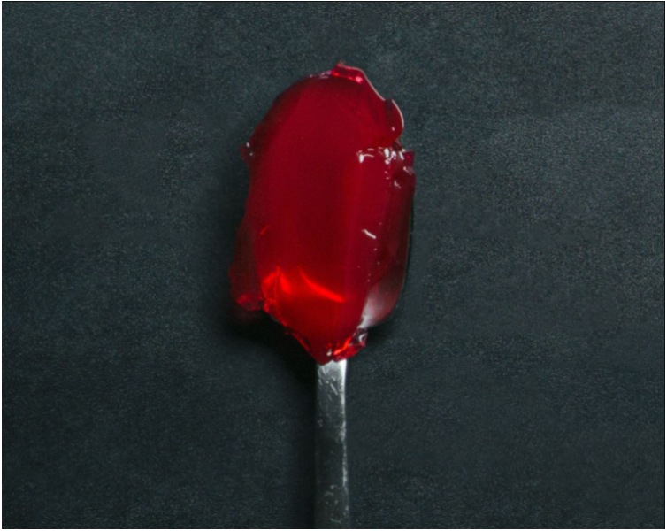
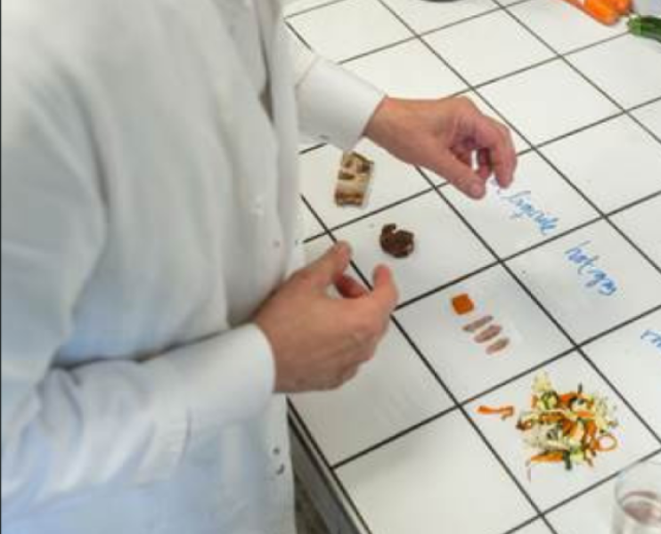
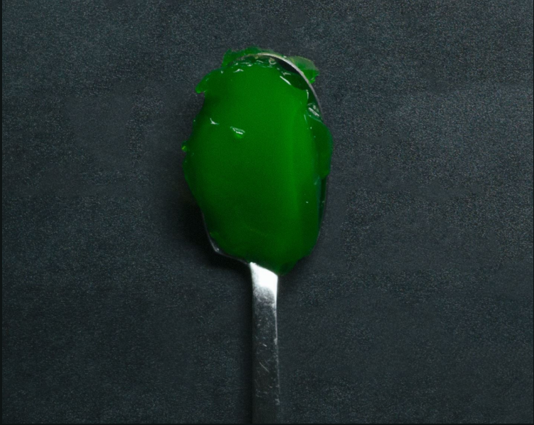
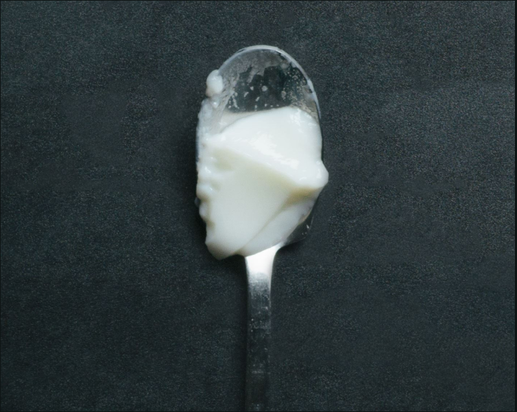

Red
Red foods remind us of berries and soft, so we anticipate a sweet test.



Red foods remind us of berries and soft, so we anticipate a sweet test.

Fresh, zingy green colours are reminiscent of unripe fruit, promosing sour or acid flavours.

White foods evoke memories of salt and salty flavours, driving the expectation of a savoury treat.